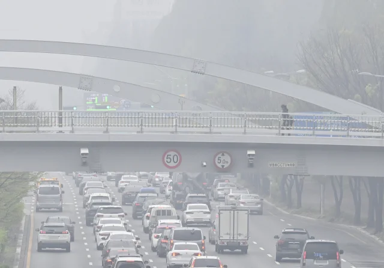
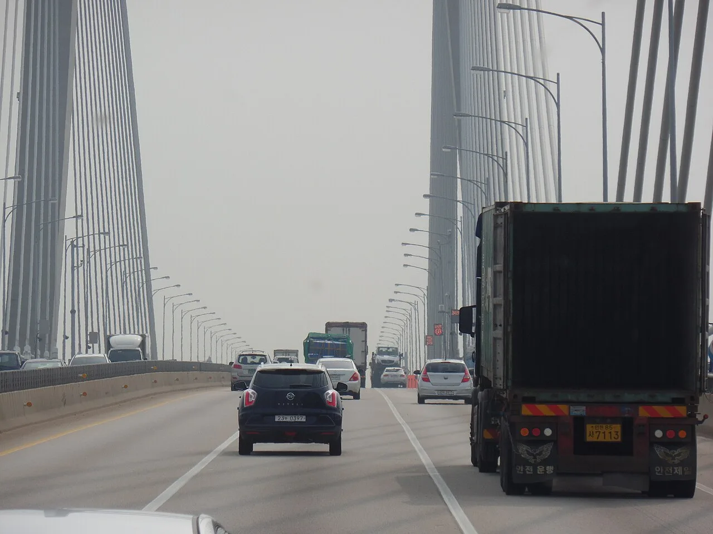
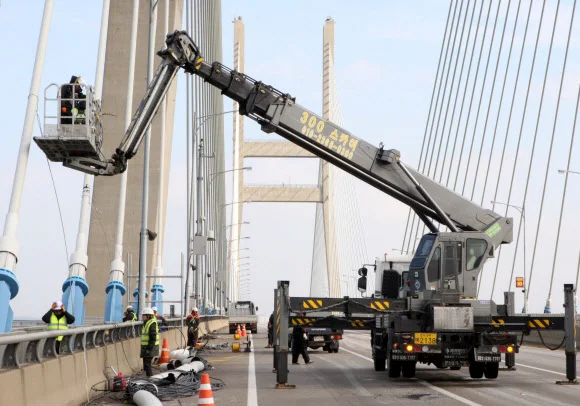
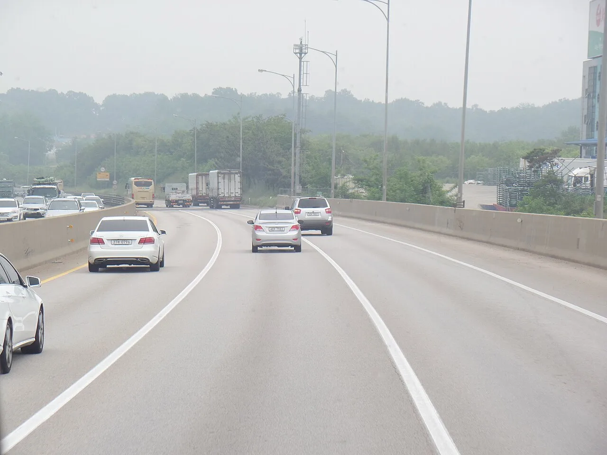

▲ 박무가 낀 서해대교. 서해안고속도로는 안개가 잦은 대표 구간이다 ⓒ Wikimedia Commons
1. 3월 1일부터 달라진 것
서해안고속도로 당진IC~서평택IC 구간에 가변형 속도제한 시스템이 들어갔습니다. 2020년 1월에 처음 설치된 뒤 계도기간을 거쳐, 2026년 3월 1일부터 본격 운영에 들어갔습니다.
가변형 속도제한이란 표지판의 숫자가 고정돼 있지 않다는 뜻입니다. 날씨와 노면 상태에 따라 제한속도 자체가 바뀝니다. 어제 110이었던 곳이 오늘 아침에는 55일 수 있습니다.
가을 여행 운전자에게 이 소식이 중요한 이유가 있습니다. 서해안은 가을부터 겨울까지 안개가 가장 잦은 구간이고, 이 시스템이 본격 가동된 첫 가을이 지금이기 때문입니다.

▲ 안개가 내려앉은 고속도로. 표지판 숫자가 바뀌는 조건이 바로 이 상태다 ⓒ 경기일보
2. 두 단계로 줄어든다
| 조건 | 제한속도 |
|---|---|
| 비로 노면이 젖었거나 적설량 20mm 미만 | 법정 제한속도의 80% |
| 가시거리 100m 이내 · 노면 결빙 · 적설량 20mm 이상 | 법정 제한속도의 50% |
숫자로 옮기면 체감이 다릅니다. 제한속도 100km/h 구간이라면 비 오는 날 80km/h, 짙은 안개가 끼면 50km/h가 됩니다. 절반입니다.
가시거리 100m라는 기준을 감으로 잡아 보면 이렇습니다. 시속 100km로 달릴 때 100m는 3.6초 만에 지나갑니다. 앞차가 멈춰 있는 것을 그때 발견한다면 대응할 시간이 사실상 없습니다. 50km/h로 낮추라는 기준이 여기서 나옵니다.

▲ 서해대교 주탑 구간. 다리 위는 주변에 시선을 둘 지형지물이 없어 속도감이 무뎌진다 ⓒ Wikimedia Commons
3. 단속에 예외가 없다
표시된 제한속도를 넘기면 그대로 단속됩니다. "평소 제한속도는 100인데"라는 항변이 통하지 않는다는 뜻입니다.
이 부분이 실수하기 쉬운 지점입니다. 내비게이션에 저장된 제한속도는 평상시 기준입니다. 가변 구간에서는 내비게이션 안내와 실제 표지판이 다를 수 있습니다. 기준은 도로 위 전광표지입니다.
안전시설은 총 98개소가 설치됐습니다. 도로전광표지 5개소, 가변속도안내표지 7개소 등입니다. 감속 구간에 들어서기 전에 여러 번 안내가 나오는 구조입니다.
4. 왜 이 구간인가 — 서해대교의 기억
서해대교는 국내에서 안개로 가장 유명한 도로 가운데 하나입니다. 서해 바다의 습한 공기가 육지의 찬 공기와 만나면서 다리 위에 안개가 깔립니다.
2006년 이곳에서 29중 추돌 사고가 있었습니다. 12명이 숨지고 54명이 다쳤습니다. 안개 속 연쇄 추돌이 어떤 규모로 번질 수 있는지를 보여 준 사고였습니다.

▲ 서해대교 사장 케이블 보수 작업. 이 구간은 사고 이후에도 케이블 손상·통제 등으로 여러 차례 전면 차단을 겪었다 ⓒ 경기일보

▲ 다리 위에서는 앞차의 실루엣이 사라지는 순간 판단할 정보가 거의 남지 않는다 ⓒ Wikimedia Commons
최근 3년(2023~2025년) 통계도 함께 봐야 합니다. 기상과 노면 악화로 인한 고속도로 사망자가 연평균 6.7명이었습니다. 가변형 속도제한은 이 숫자를 줄이기 위한 장치입니다.
5. 안개 속에서 실제로 해야 할 것
첫째, 안개등을 켜십시오. 안개등은 낮게 넓게 퍼지도록 설계돼 있어 안개 속에서 노면과 차선을 읽는 데 유리합니다. 상향등은 반대입니다. 빛이 물방울에 반사돼 시야를 하얗게 만듭니다.
둘째, 비상등을 켜고 달리지 마십시오. 뒤차가 정차 중인 차로 오인할 수 있습니다. 안개 구간에서는 미등과 안개등을 켠 채 일정 속도를 유지하는 편이 안전합니다.
셋째, 차선을 보고 달리십시오. 앞차의 미등만 보고 따라가면 그 차가 갓길에 서 있을 때 그대로 들이받게 됩니다. 실제 다중 추돌은 대부분 이 방식으로 커집니다.
넷째, 다리 위에서는 창문을 조금 여십시오. 소리로 주변 차량의 위치를 가늠할 수 있습니다.

▲ 안개 속에서는 상대 차량의 등화가 유일한 정보가 된다 ⓒ Wikimedia Commons
참고로 8월 26일부터 앞면안개등 튜닝부품 인증제도가 시행됐습니다. 안개등을 바꿀 계획이라면 인증 여부를 확인하는 편이 좋습니다. 관련 내용은 앞면안개등 인증제 기사에 정리해 두었습니다.
6. 가을 서해안으로 떠나는 사람에게
첫째, 출발 시각을 조정하십시오. 복사안개는 새벽부터 아침 사이에 가장 짙습니다. 해가 오르면 걷힙니다. 같은 목적지라도 오전 6시 출발과 9시 출발의 위험도가 다릅니다.
둘째, 도착 시각도 함께 보십시오. 가을에는 해가 빨리 집니다. 일몰 직후 기온이 떨어지면서 다시 안개가 생길 수 있습니다.
셋째, 우회로를 미리 정해 두십시오. 서해대교 구간이 통제되면 우회 경로의 통행료와 소요 시간이 달라집니다.
정리하면 이렇습니다. 올가을 서해안고속도로에서 표지판의 숫자가 평소와 다르다면 고장이 아닙니다. 그 숫자가 지금 그 도로의 법정 제한속도이고, 넘기면 단속됩니다.